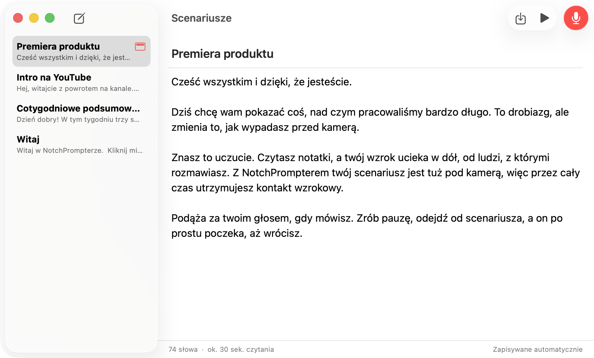
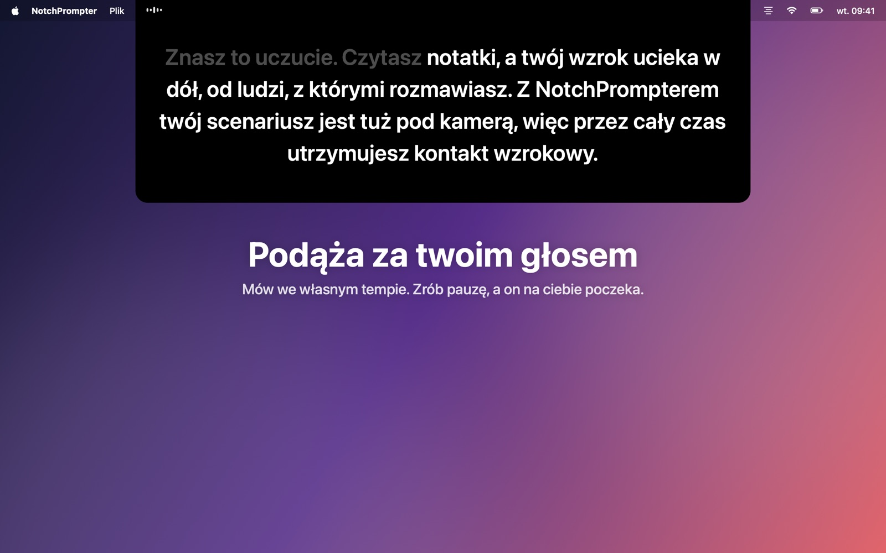
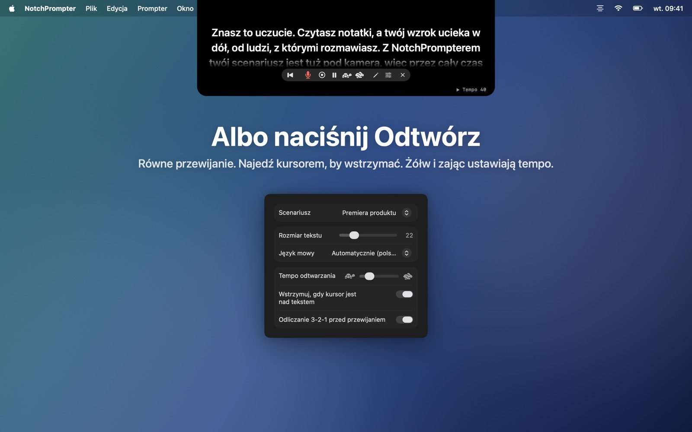
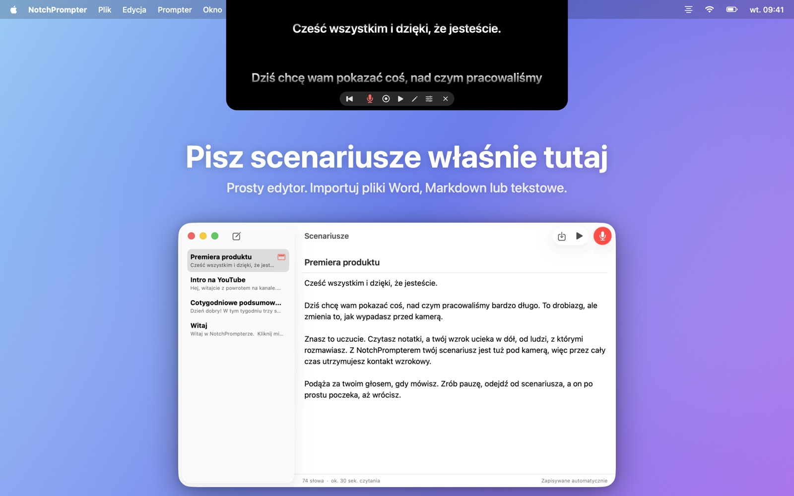
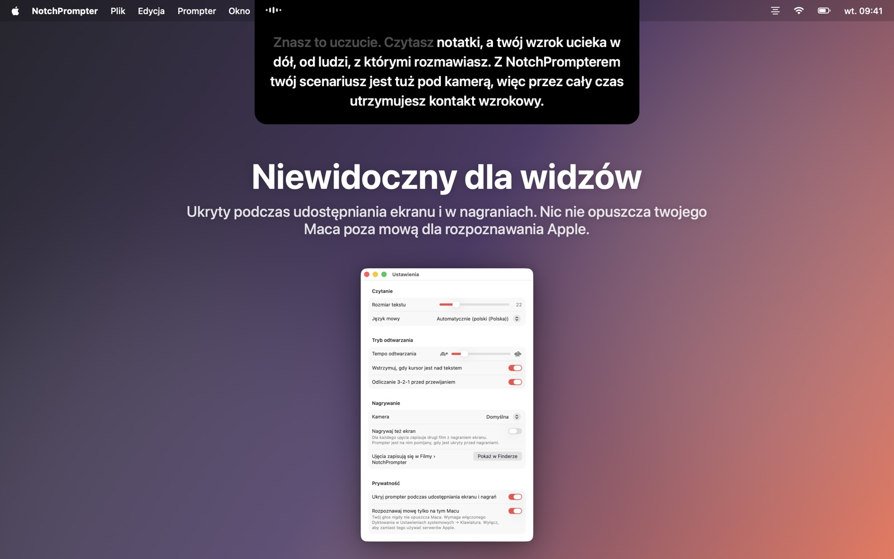

Utrzymuj kontakt wzrokowy podczas czytania
NotchPrompter umieszcza scenariusz tuż pod kamerą i podąża za twoim głosem. W każdym języku, nawet gdy coś przeskoczysz, i w całości na twoim Macu.
Bezpłatny i open source. Dla macOS 15 Sequoia lub nowszego. Najlepiej działa na MacBooku z notchem, a także na każdym Macu z kamerą u góry.
Zobacz, jak działa
Czytaj, rób pauzy, przeskakuj. Prompter dotrzymuje ci kroku.
Wszystko, czego potrzebujesz. Nic, co przeszkadza.
Mały czarny panel pod kamerą, kilka czytelnych przycisków, prosty edytor scenariuszy i przycisk nagrywania.
Podąża za twoim głosem
Kliknij mikrofon i mów. Kolejne słowa są zawsze tuż pod kamerą. Wypowiedziane słowa stopniowo znikają.
Każdy język, automatycznie
NotchPrompter rozpoznaje, w jakim języku jest scenariusz, i nasłuchuje właśnie tego języka. Angielski, norweski, niemiecki, hiszpański, japoński i dziesiątki innych.
Nadąża, gdy przeskakujesz
Pomiń zdanie, zmień słowo, powiedz „yyy”. Prompter znajdzie miejsce, w którym jesteś, i przeskoczy razem z tobą. Zrób pauzę, a poczeka.
Albo naciśnij Odtwórz
Płynne przewijanie z odliczaniem 3-2-1. Najedź kursorem, by wstrzymać, a tempo ustaw żółwiem i zającem.
Wbudowany edytor
Pisz i przechowuj wszystkie scenariusze w jednym miejscu. Importuj pliki Word, Markdown, RTF lub tekstowe. Zapisuje automatycznie.
Nagrywaj siebie
Kliknij nagrywanie, by filmować się kamerą i mikrofonem podczas czytania. Każde ujęcie zapisuje się jako film w folderze Filmy.
Niewidoczny dla widzów
Ukryty podczas udostępniania ekranu, na zrzutach ekranu i w nagraniach. Widzisz go tylko ty.
Działa w całości na twoim Macu
Mowa jest rozpoznawana na twoim Macu, nie w chmurze. Bez konta, bez śledzenia. Twoje scenariusze i nagrania nigdy nie opuszczają twojego Maca.
Twoje scenariusze na jedno kliknięcie
Kliknij ołówek w prompterze, by otworzyć edytor. Wybierz scenariusz, kliknij mikrofon i zacznij mówić.
- Napisz lub wklej scenariusz albo zaimportuj plik.
- Kliknij Czytaj głosem.
- Patrz w kamerę i mów.

Stworzony do kamery
Rozmowy wideo, YouTube, kursy, webinary i prezentacje.




Pytania
Czy to naprawdę za darmo?
Tak. NotchPrompter jest bezpłatny i open source na licencji MIT. Bez reklam, bez subskrypcji, bez konta. Kod źródłowy jest na GitHubie, gdzie możesz zgłaszać błędy, proponować funkcje lub pomóc w rozwoju.
Czy działa bez notcha?
Tak. Na Macu bez notcha prompter wisi u góry ekranu, pod paskiem menu, czyli nadal blisko kamery.
Jakie języki obsługuje śledzenie głosu?
Dziesiątki, w tym angielski, norweski, niemiecki, francuski, hiszpański, chiński i japoński. NotchPrompter rozpoznaje, w jakim języku jest scenariusz, i nasłuchuje tego języka, więc nie musisz nic ustawiać. W Ustawieniach możesz wybrać inny język.
Czy inni zobaczą prompter, gdy udostępnię ekran?
Nie. Domyślnie jest ukryty podczas udostępniania ekranu, na zrzutach ekranu i w nagraniach. Jeśli chcesz go pokazać, możesz to wyłączyć w Ustawieniach.
Czy coś trafia do chmury?
Nie. Mowa jest rozpoznawana na twoim Macu (gdy Dyktowanie jest włączone w Ustawieniach systemowych), a NotchPrompter nie ma serwerów. Śledzenie głosu nigdy nie zapisuje dźwięku. Film zapisuje się tylko wtedy, gdy klikniesz nagrywanie, i to w twoim własnym folderze Filmy. Przeczytaj politykę prywatności.
Jakie są skróty klawiszowe?
Kliknij prompter, a potem: Spacja odtwarzanie/pauza, V głos, C nagrywanie, R na początek, ↑ ↓ tempo, + − rozmiar tekstu, E edytor, Esc stop.